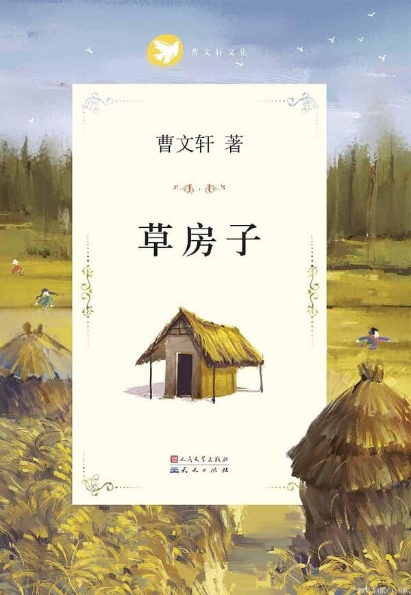

内容简介
内容简介：小说的故事发生在油麻地，故事中通过对主人公男孩桑桑刻骨铭心而又终身难忘的六年小学生活的描写，讲述了五个孩子，桑桑、秃鹤、杜小康、细马、纸月和油麻地的老师蒋一轮、白雀关系的纠缠和孩子们痛苦的成长历程。六年中，桑桑亲眼目睹或直接参与了一连串看似寻常但又催人泪下、感动人心的故事：少男少女之间毫无瑕疵的纯情，不幸少年与厄运相拼时的悲怆与优雅，垂暮老人在最后一瞬间所闪耀的人格光彩，在体验死亡中对生命的深切而优美的领悟，大人们之间扑朔迷离且又充满诗情画意的情感纠葛……这一切，既清楚又朦胧地展现在少年桑桑的世界里。这六年，是他接受人生启蒙教育的六年。